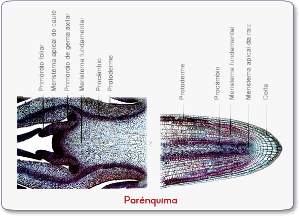
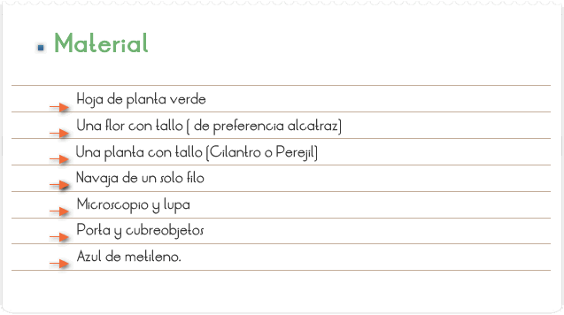
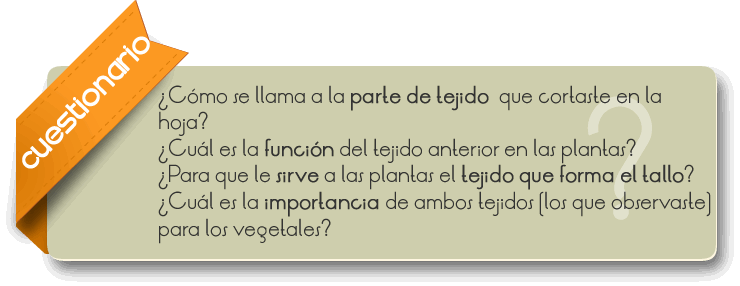

La histología (del griego: histós "tejido") es la ciencia que estudia todo lo referente a los tejidos orgánicos: su estructura microscópica, su desarrollo y sus funciones. La histología se identifica a veces con lo que se ha llamado anatomía microscópica.

Que el alumno aprenda a diferenciar los tejidos de las plantas a través de la observación al microscopio.

1. Haz una observación minuciosa de cada uno de tus ejemplares a simple vista.
2. Ahora con ayuda de la navaja realiza un corte longitudinal (como si pelaras un pepino), por el envés (lado de la hoja que de hacia el suelo o revés) de la hoja procurando que este sea muy fino.
3. Coloca sobre el portaobjetos una gota de agua y agrega el corte que realizaste, obsérvalo detenidamente con la lupa y dibuja.
4. Ahora coloca a tu preparación el cubreobjetos y obsérvalo en el microscopio primero con el objetivo de menor aumento y luego con el de mayor aumento. Realiza un dibujo de cada una.
5. Toma la flor con tallo y corta el tallo de forma transversal (como si rebanaras pan), procura que sea muy delgado y realiza tus observaciones como en el paso 3 y 4.
6. Realiza el paso anterior para el tallo del cilantro. No olvides dibujar lo mas parecido posible a tus observaciones.

En una planta vascular adulta encontramos tejidos diferenciados de acuerdo a la función que desempeñan: tejidos de crecimiento (meristemos), protectores (epidermis y peridermis), fundamentales (parénquimas), de sostén (colénquima y esclerénquima), conductores (floema y xilema).
Además, las plantas también presentan estructuras secretoras donde acumulan sustancias metabólicas que no usan directamente.